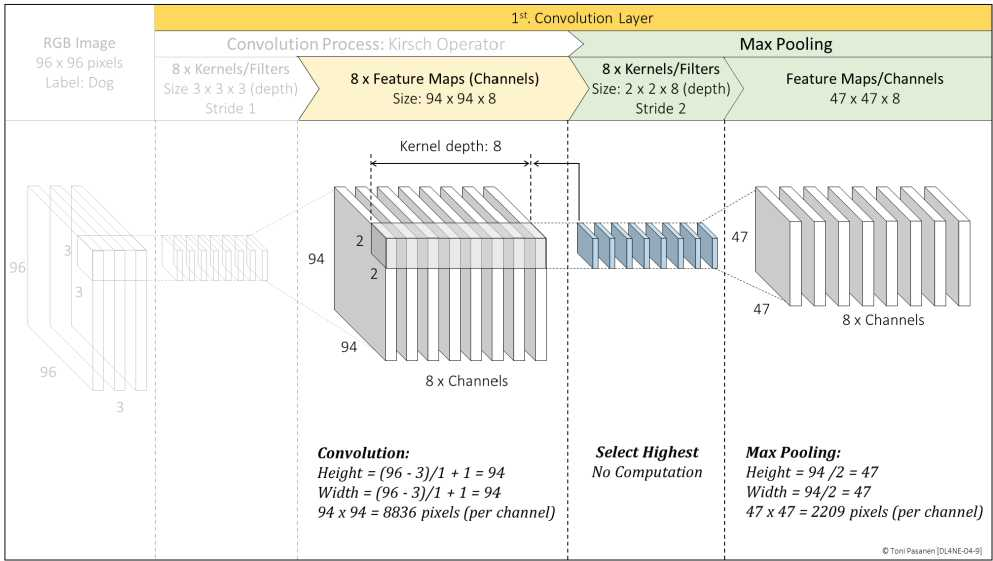
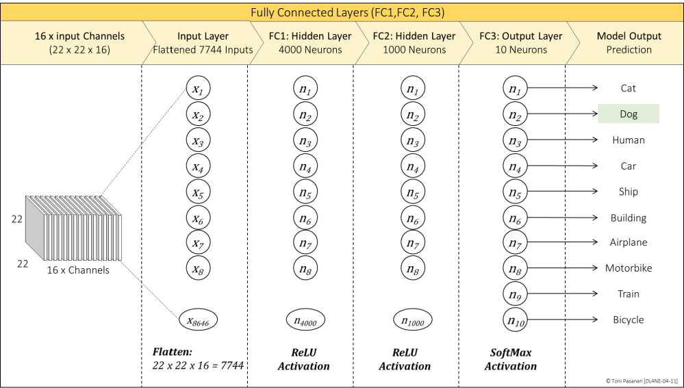

第一层找边，第二层组装成纹理/部件，最后展平（flatten）进全连接做 10 分类。书 p100-105 跟踪两层卷积+池化尺寸变化，这是读懂模型日志（如 shape [28,28,1]→[14,14,8]）的基本功。
全连接层按 Ch2/Ch3 方法算梯度；到池化层，误差只回传给当初的最大值位置（其余为0）；到卷积层，误差与输入做卷积得到核的梯度，再更新核。记住一句：前向怎么来，反向怎么回。
CNN 参数比 FNN 少得多，但训练仍是数据并行+梯度同步，AllReduce 流量依然可观。只是单卡压力小了，对 Fabric 的绝对带宽要求略降——但集合通信模式没变。


画出 CNN 前向→反向回路，标出池化“胜者回传”。